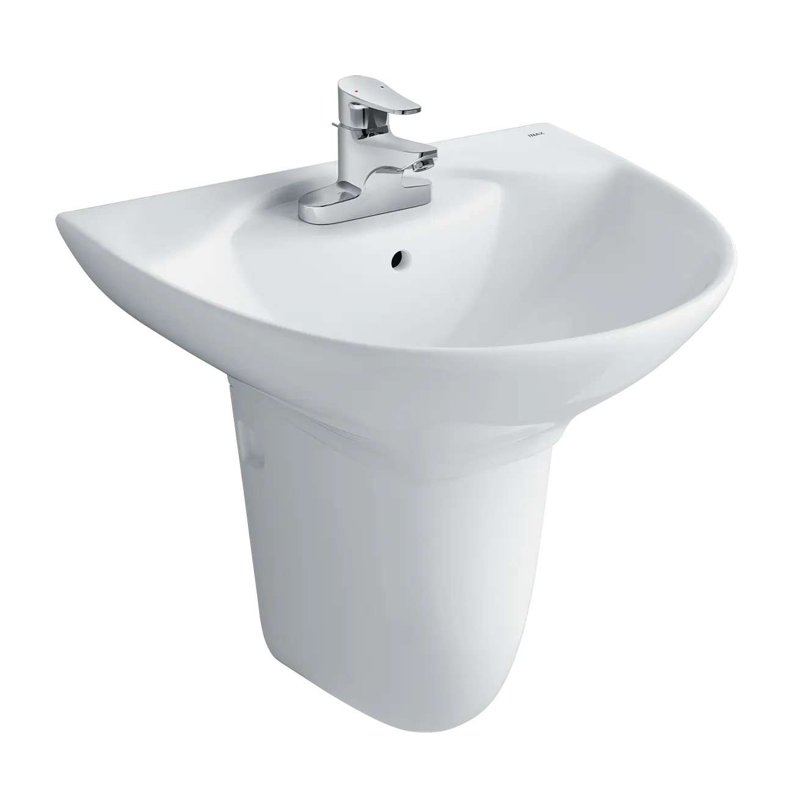
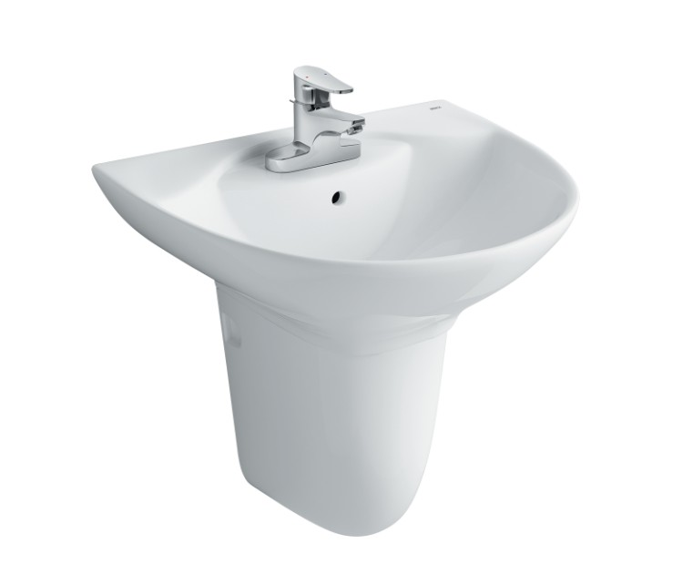
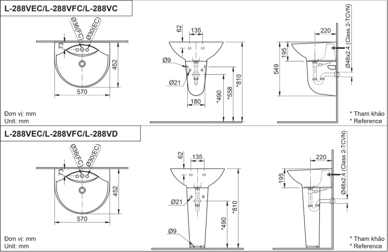

Chậu rửa treo tường INAX L-288V là một mẫu chậu rửa mặt treo tường độc đáo, được thiết kế để mang lại trải nghiệm thư giãn và nâng cao tính thẩm mỹ cho không gian phòng tắm. Sản phẩm nổi bật với những đường cong mềm mại và chất liệu sứ cao cấp, không chỉ là thiết bị vệ sinh mà còn là một tác phẩm nghệ thuật, tạo cảm giác nhẹ nhàng, êm dịu mỗi khi sử dụng.Thiết kế chậu rửa treo tường L-288V(EC/FC) mềm mạiĐiểm nhấn của chậu rửa treo tường L-288V là những đường cong mềm mại, tạo vẻ ngoài tinh tế uyển chuyển, mang đến trải nghiệm “thư giãn” dành cho người sử dụng. Chậu được gắn cố định vào tường nên không chiếm dụng diện tích, tạo cảm giác rộng rãi, thông thoáng và dễ vệ sinh hơn cho phòng tắm.Với kích thước tổng 563 x 196 x 406 mm, chậu rửa mặt INAX L-288V mang đến khu vực rửa rộng rãi nhưng vẫn gọn gàng cho toàn bộ không gian.Các tính năng nổi bật của L-288V (EC/FC)Chất liệu sứ cao cấp, vệ sinh dễ dàngChậu rửa treo tường INAX L-288V được sản xuất từ sứ cao cấp, đảm bảo độ bền và chất lượng theo tiêu chuẩn Nhật Bản. Bề mặt chậu được phủ men sứ sáng đẹp, trơn bóng với khả năng chống bám bẩn vượt trội nên vệ sinh dễ dàng hơn.Hai phiên bản tiện lợiChậu rửa L-288V có hai phiên bản, cho phép bạn linh hoạt lựa chọn loại vòi phù hợp:FC (Chậu 1 lỗ): Lựa chọn phổ biến, thích hợp với các mẫu vòi lavabo 1 tay gạt thân thấp.EC (Chậu 3 lỗ): Phù hợp để gắn các loại vòi 1 tay gạt có đế rộng hoặc vòi 3 lỗ truyền thống.Video giới thiệu chậu rửa INAXBản vẽ lắp đặt chậu rửa treo tường L-288V(EC/FC)Xem hướng dẫn lắp đặt: HDLD L-288V.pdfThông số kỹ thuậtChất liệuSứ cao cấp với men sứ trắng sáng, bền bỉ, dễ dàng vệ sinhKiểu dángTreo tườngKích thước563 x 196 x 460 (mm)Thiết kếĐường cong mềm mại, mang đến trải nghiệm thư giãn Thiết kế trang nhã, lỗ xả tràn tiện lợi, gồm có 2 loại: - EC: Chậu 3 lỗ gắn vòi 1 tay gạt - FC: Chậu 1 lỗThương hiệuINAXMàu sắcTrắngKhác- Hotline tư vấn và bảo hành: 18006633
Chậu rửa treo tường L-288V(EC/FC)
Chậu rửa thương hiệu INAX.
Đã cập nhật danh sách yêu thích.
DANH MỤC: Chậu rửa
MÃ SẢN PHẨM: L-288V(EC/FC)
DEPTH: mm
HEIGHT: mm
WIDTH: mm
Chậu rửa treo tường INAX L-288V là một mẫu chậu rửa mặt treo tường độc đáo, được thiết kế để mang lại trải nghiệm thư giãn và nâng cao tính thẩm mỹ cho không gian phòng tắm. Sản phẩm nổi bật với những đường cong mềm mại và chất liệu sứ cao cấp, không chỉ là thiết bị vệ sinh mà còn là một tác phẩm nghệ thuật, tạo cảm giác nhẹ nhàng, êm dịu mỗi khi sử dụng.Thiết kế chậu rửa treo tường L-288V(EC/FC) mềm mạiĐiểm nhấn của chậu rửa treo tường L-288V là những đường cong mềm mại, tạo vẻ ngoài tinh tế uyển chuyển, mang đến trải nghiệm “thư giãn” dành cho người sử dụng. Chậu được gắn cố định vào tường nên không chiếm dụng diện tích, tạo cảm giác rộng rãi, thông thoáng và dễ vệ sinh hơn cho phòng tắm.Với kích thước tổng 563 x 196 x 406 mm, chậu rửa mặt INAX L-288V mang đến khu vực rửa rộng rãi nhưng vẫn gọn gàng cho toàn bộ không gian.Các tính năng nổi bật của L-288V (EC/FC)Chất liệu sứ cao cấp, vệ sinh dễ dàngChậu rửa treo tường INAX L-288V được sản xuất từ sứ cao cấp, đảm bảo độ bền và chất lượng theo tiêu chuẩn Nhật Bản. Bề mặt chậu được phủ men sứ sáng đẹp, trơn bóng với khả năng chống bám bẩn vượt trội nên vệ sinh dễ dàng hơn.Hai phiên bản tiện lợiChậu rửa L-288V có hai phiên bản, cho phép bạn linh hoạt lựa chọn loại vòi phù hợp:FC (Chậu 1 lỗ): Lựa chọn phổ biến, thích hợp với các mẫu vòi lavabo 1 tay gạt thân thấp.EC (Chậu 3 lỗ): Phù hợp để gắn các loại vòi 1 tay gạt có đế rộng hoặc vòi 3 lỗ truyền thống.Video giới thiệu chậu rửa INAXBản vẽ lắp đặt chậu rửa treo tường L-288V(EC/FC)Xem hướng dẫn lắp đặt: HDLD L-288V.pdfThông số kỹ thuậtChất liệuSứ cao cấp với men sứ trắng sáng, bền bỉ, dễ dàng vệ sinhKiểu dángTreo tườngKích thước563 x 196 x 460 (mm)Thiết kếĐường cong mềm mại, mang đến trải nghiệm thư giãn Thiết kế trang nhã, lỗ xả tràn tiện lợi, gồm có 2 loại: - EC: Chậu 3 lỗ gắn vòi 1 tay gạt - FC: Chậu 1 lỗThương hiệuINAXMàu sắcTrắngKhác- Hotline tư vấn và bảo hành: 18006633
DANH MỤC: Chậu rửa
MÃ SẢN PHẨM: L-288V(EC/FC)
DEPTH: mm
HEIGHT: mm
WIDTH: mm